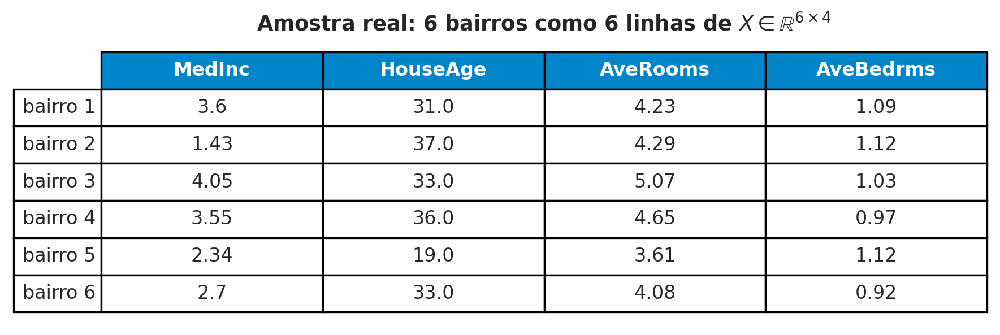
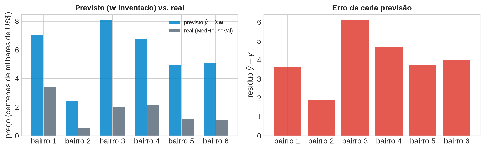
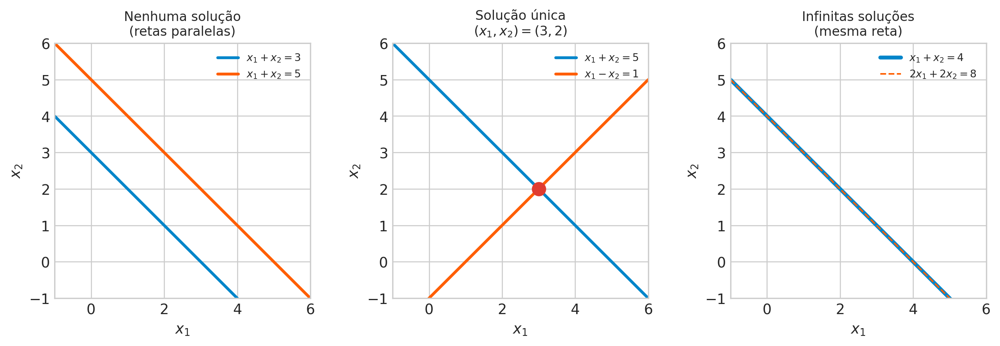
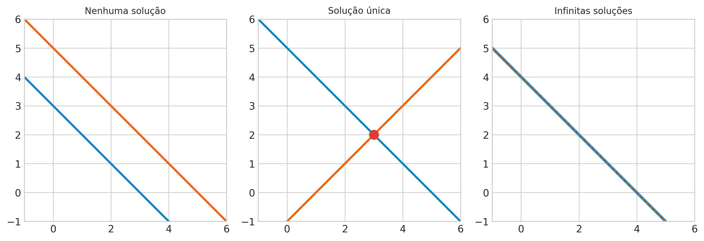
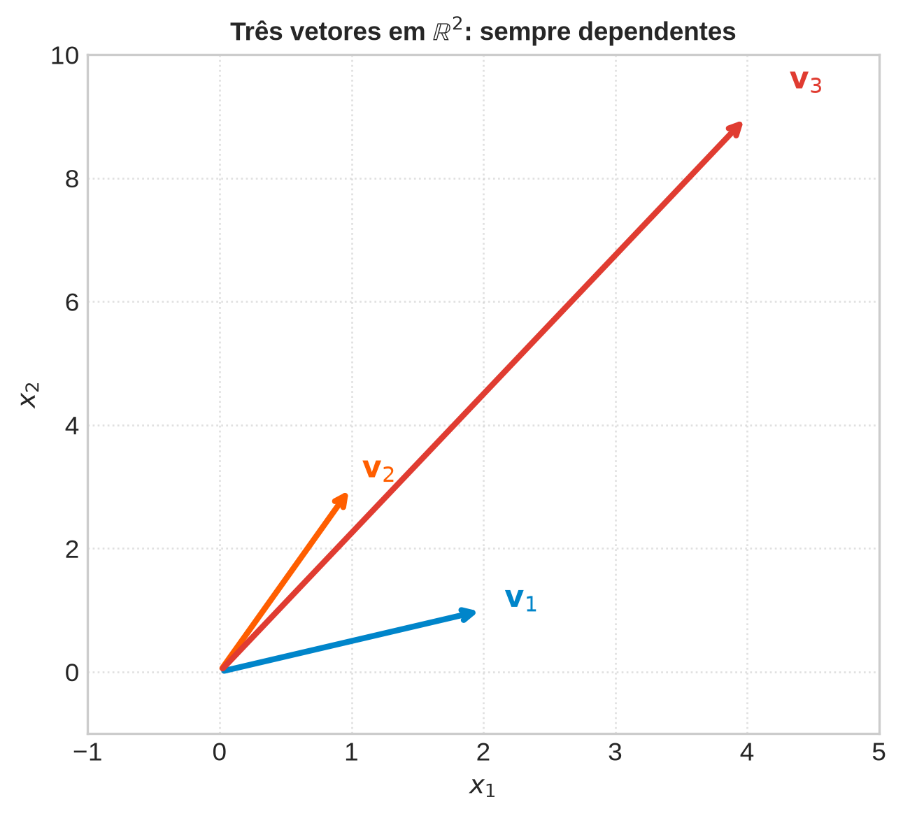
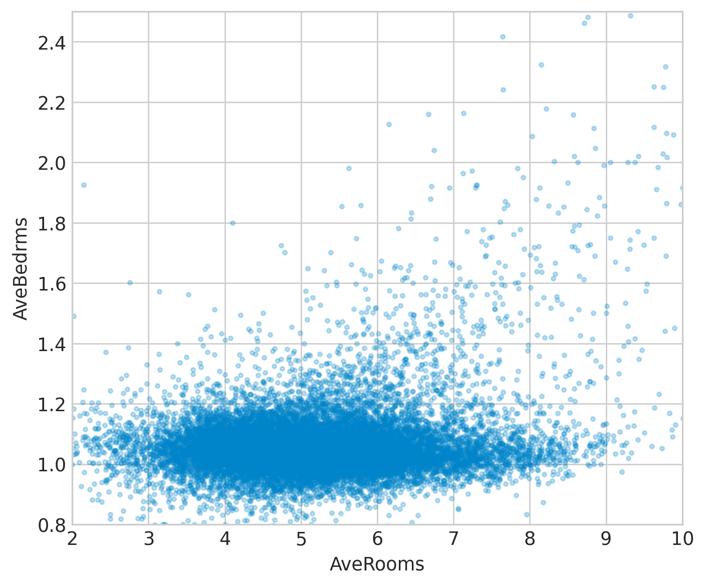

Aula 2: Representações Matriciais, Sistemas Lineares e Independência
Álgebra Linear e Otimização para Aprendizado de Máquina
Prof. Marcos Medeiros Raimundo
2026-08-23
Da Vetor ao Dataset: a Matriz de Design
Roteiro da Aula
1. De um vetor para um dataset inteiro — o que isso compra?
2. Multiplicar matriz por vetor: duas leituras igualmente corretas.
3. Um sistema linear — quando tem solução, e quantas?
4. Como saber se atributos têm informação redundante?

Definindo a Matriz de Design
Da Tabela de Dados à Matriz
\[ A = \begin{bmatrix} a_{11} & \cdots & a_{1n} \\ \vdots & \ddots & \vdots \\ a_{m1} & \cdots & a_{mn} \end{bmatrix} \in \mathbb{R}^{m\times n} \]
Empilhando \(N\) vetores \(\mathbf{x}_i\in\mathbb{R}^d\) como linhas: \[X = \begin{bmatrix} \mathbf{x}_1^T \\ \vdots \\ \mathbf{x}_N^T \end{bmatrix} \in \mathbb{R}^{N\times d}\]
Linha = uma observação. Coluna = um atributo em todas as observações. Mesma matriz, duas leituras.
Pergunta
Na matriz de design \(X\), o que significa fisicamente “somar duas colunas” — isso é uma operação que faz sentido para os dados desta aula?
(Pense em MedInc, em dezenas de milhares de dólares, somado a HouseAge, em anos — as unidades combinam?)
Operações com Matrizes: Duas Leituras de \(A\mathbf{x}\)
O Produto Matriz-Vetor, de Duas Formas
\[c_{ij} = \sum_{l=1}^n a_{il}b_{lj} \qquad \text{(MathML, eq. 2.13, } k=1 \text{ para } A\mathbf{x}\text{)}\]
Leitura 1 (linha): \((A\mathbf{x})_i = \mathbf{a}_i^T\mathbf{x}\) — produto interno da linha \(i\) com \(\mathbf{x}\).
Leitura 2 (coluna): \(A\mathbf{x} = \sum_j x_j\,\mathbf{a}^{(j)}\) — combinação linear das colunas de \(A\).
Leitura 1 → previsão. Leitura 2 → o que importa a partir do Bloco 4.
Conectando com Regressão Linear Múltipla
\[\hat{\mathbf{y}} = X\mathbf{w} \in \mathbb{R}^N\] Todas as \(N\) previsões, de uma vez, com um único produto matriz-vetor.
\(\mathbf{w}\) pondera o quanto cada atributo (coluna de \(X\)) contribui — \(X\mathbf{w}\) é uma combinação linear das colunas de \(X\).

Pergunta
Julgue V ou F: matrizes, produto matriz-vetor e a Leitura 1/Leitura 2
Julgue V ou F — a questão só conta se acertar os 4 itens:
- O produto matriz-vetor \(A\mathbf{x}\) pode ser lido como um vetor cuja \(i\)-ésima entrada é o produto interno da linha \(i\) de \(A\) com \(\mathbf{x}\).
- O produto matriz-vetor \(A\mathbf{x}\) também pode ser lido como uma combinação linear das colunas de \(A\), pesada pelas entradas de \(\mathbf{x}\).
- Numa matriz de design \(X\in\mathbb{R}^{N\times d}\), cada coluna corresponde a uma observação, e cada linha a um atributo.
- Em \(\hat{\mathbf{y}} = X\mathbf{w}\), o vetor \(\mathbf{w}\) pondera a contribuição de cada atributo (coluna de \(X\)) para a previsão.
Resposta
Julgue V ou F: matrizes, produto matriz-vetor e a Leitura 1/Leitura 2 — Resposta
- Verdadeiro — é a Leitura 1.
- Verdadeiro — é a Leitura 2, ambas equivalentes pela Eq. 2.13 do MathML.
- Falso — é o oposto: cada linha é uma observação, cada coluna é um atributo.
- Verdadeiro — é a leitura de \(X\mathbf{w}\) como combinação linear das colunas.
Sistemas Lineares: Quando \(A\mathbf{x}=\mathbf{b}\) Tem Solução?
Um Sistema Linear, Formalmente
\[A\mathbf{x} = \mathbf{b}, \qquad A\in\mathbb{R}^{m\times n},\; \mathbf{b}\in\mathbb{R}^m\]
Aula 1: caso particular \(\mathbf{b}=\mathbf{0}\) — solução sempre um subespaço. Agora: \(\mathbf{b}\) arbitrário.

As Três Formas Possíveis de Solução

Nenhuma, exatamente uma, ou infinitas — nunca “duas” ou “três”.
O Sistema que Interessa em ML: Sobredeterminado
\(X\mathbf{w}=\mathbf{y}\): \(N\) equações (observações), \(d\) incógnitas (pesos). Em ML real, \(N \gg d\).
Mais equações que incógnitas = sobredeterminado — genericamente, nenhuma solução exata. Exigir uma reta passando exatamente por milhares de pontos ruidosos é pedir demais.
Não é um beco sem saída: é o problema que abre a Aula 3.
Pergunta
Se um sistema \(A\mathbf{x}=\mathbf{b}\) tem mais incógnitas do que equações (\(n>m\)), ele pode ter solução única?
(Pense: cada equação é uma restrição a menos do que graus de liberdade — sobra alguma direção livre?)
Independência Linear
Combinações Lineares e Independência
Combinação linear: \(\lambda_1\mathbf{x}_1+\cdots+\lambda_k\mathbf{x}_k\). A trivial (\(\lambda_i=0\)) sempre dá \(\mathbf{0}\).
Dependente: existe combinação não trivial que também dá \(\mathbf{0}\). Independente: só a trivial dá \(\mathbf{0}\).
Sem redundância: remover qualquer vetor independente faz perder informação (MathML, §2.5).
v1 = np.array([2.0, 1.0])
v2 = np.array([1.0, 3.0])
v3 = np.array([4.0, 9.0])
# Existe combinação não trivial de v1, v2 que dá v3?
coef, *_ = np.linalg.lstsq(np.column_stack([v1, v2]), v3, rcond=None)
a, b = coef
print(f"v3 = {a:.2f}*v1 + {b:.2f}*v2 -> verificação: {a*v1 + b*v2}")
print("rank([v1, v2, v3]) =", np.linalg.matrix_rank(np.column_stack([v1, v2, v3])))v3 = 0.60*v1 + 2.80*v2 -> verificação: [4. 9.]
rank([v1, v2, v3]) = 2
Da Independência à Multicolinearidade
Coluna de \(X\) = combinação linear exata de outras (ex.: mesma área em m² e em pés²) → não acrescenta informação nova.
Primeiro nome formal de multicolinearidade: colunas linearmente dependentes. O Bloco 5 mede isso: o posto.
Pergunta
Julgue V ou F: independência linear
Julgue V ou F — a questão só conta se acertar os 4 itens:
- Um conjunto de vetores é linearmente dependente se existe alguma combinação linear não trivial deles que resulta no vetor nulo.
- A combinação linear trivial (todos os coeficientes iguais a zero) sempre resulta no vetor nulo, para qualquer conjunto de vetores.
- Quatro vetores quaisquer em \(\mathbb{R}^2\) podem ser linearmente independentes, dependendo de como são escolhidos.
- Se uma coluna da matriz de design é combinação linear exata de outras colunas, ela não acrescenta informação nova ao modelo.
Resposta
Julgue V ou F: independência linear — Resposta
- Verdadeiro — é a própria Definição 2.12 do MathML.
- Verdadeiro — \(\sum 0\cdot\mathbf{x}_i = \mathbf{0}\) sempre.
- Falso — mais de 2 vetores em \(\mathbb{R}^2\) são sempre dependentes, não importa a escolha.
- Verdadeiro — é exatamente a definição de multicolinearidade exata.
Base e Posto: Medindo Informação Independente
O Posto de uma Matriz
Posto: nº de colunas independentes = nº de linhas independentes (MathML, §2.6.2, citado).
Completo: \(\text{rk}(A)=\min(m,n)\). Deficiente: menos que isso.
Solvabilidade: \(A\mathbf{x}=\mathbf{b}\) tem solução \(\iff\) \(\text{rk}(A)=\text{rk}(A|\mathbf{b})\).
X_completo = _housing[COLS].to_numpy()
print("X completo:", X_completo.shape, " posto:", np.linalg.matrix_rank(X_completo))
# Fabricando multicolinearidade exata: uma "5a coluna" que é 2x AveRooms
X_com_duplicata = np.column_stack([X_completo, 2.0 * X_completo[:, 2]])
print("X com coluna redundante:", X_com_duplicata.shape, " posto:", np.linalg.matrix_rank(X_com_duplicata))X completo: (16640, 4) posto: 4
X com coluna redundante: (16640, 5) posto: 4Calculando o Posto de um Dataset Real
X original (4 colunas): posto = 4
X + coluna redundante (5 colunas): posto = 4Coluna redundante (\(2\times\) AveRooms) não eleva o posto — a matriz fica deficiente. Infinitas formas de distribuir o “crédito” entre a coluna original e a cópia, mesma previsão.
corr_quartos = np.corrcoef(_housing["AveRooms"], _housing["AveBedrms"])[0, 1]
print(f"Correlação AveRooms/AveBedrms: {corr_quartos:.3f}")
fig, ax = plt.subplots(figsize=(6, 5))
ax.scatter(_housing["AveRooms"], _housing["AveBedrms"], s=6, color=COR_A, alpha=0.25)
ax.set_xlim(2, 10); ax.set_ylim(0.8, 2.5)
ax.set_xlabel("AveRooms (média de cômodos)")
ax.set_ylabel("AveBedrms (média de quartos)")
ax.set_title(f"Correlação real = {corr_quartos:.3f} — forte, mas não exata", fontsize=11, fontweight="bold")
plt.tight_layout()
plt.show()Correlação AveRooms/AveBedrms: 0.865
O Caso Real: Quase-Multicolinearidade

Correlação real \(=0{,}865\): forte, mas não \(1\). Posto continua completo — mas o sistema fica numericamente instável (número de condição, Aula 4).
Pergunta
Julgue V ou F: posto, multicolinearidade e solvabilidade
Julgue V ou F — a questão só conta se acertar os 4 itens:
- O posto de uma matriz é o número máximo de colunas linearmente independentes, e coincide com o número máximo de linhas linearmente independentes.
- Uma matriz \(A\in\mathbb{R}^{m\times n}\) tem posto completo se \(\text{rk}(A) = \min(m,n)\).
- Acrescentar uma coluna que é combinação linear exata das demais sempre aumenta o posto de uma matriz.
- Correlação alta, mas não perfeita, entre dois atributos reais (como
AveRoomseAveBedrms) não impede a matriz de ter posto completo.
Resposta
Julgue V ou F: posto, multicolinearidade e solvabilidade — Resposta
- Verdadeiro — é a definição citada do MathML, §2.6.2.
- Verdadeiro — é a definição de posto completo.
- Falso — verificado no código: acrescentar uma coluna redundante mantém o posto igual.
- Verdadeiro — verificado: correlação \(0{,}865\), posto continua \(4\) (completo).
Fechamento: Multicolinearidade na Prática e Ponte para a Aula 3
Retomando as Perguntas de Abertura
1. Vetor → dataset: empilhar como linhas dá a matriz de design \(X\).
2. \(A\mathbf{x}\): por linha (previsão) ou por coluna (combinação linear) — mesma fórmula, dois significados.
3. Sistema linear: nenhuma, uma, ou infinitas soluções — em ML, tipicamente nenhuma (\(N\gg d\)).
4. Redundância: independência linear das colunas; posto mede quantas são de fato independentes.
Ponte para a Aula 3
Sistema sobredeterminado, sem solução exata — qual a melhor aproximação?
Projeção ortogonal de \(\mathbf{y}\) sobre o espaço-coluna de \(X\) → Equações Normais, \(X^TX\hat{\mathbf{w}} = X^T\mathbf{y}\).
Posto completo de \(X\) (Bloco 5) \(=\) a condição que garante solução única para essa equação.
Exercícios
UNICAMP — Instituto de Computação